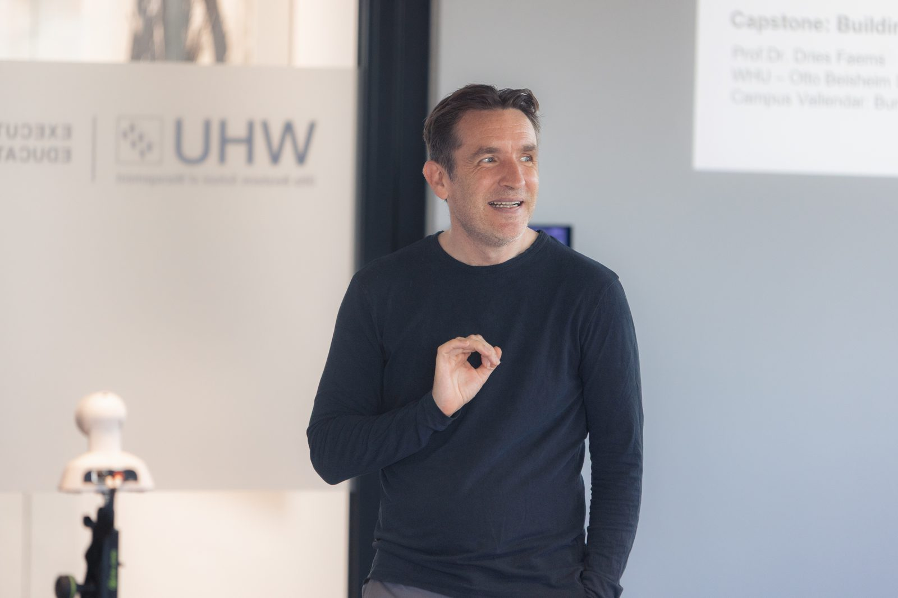

GenAI Workshops for Companies and Executives GenAI-Workshops für Unternehmen und Führungskräfte
Hands-on generative AI workshops and training programs for executives, managers, entrepreneurs and business professionals — covering practical business applications of ChatGPT, Microsoft Copilot, Claude and Gemini. Praxisnahe Generative-KI-Workshops und Trainingsprogramme für Führungskräfte, Manager, Unternehmer und Geschäftsleute – mit praktischen Geschäftsanwendungen von ChatGPT, Microsoft Copilot, Claude und Gemini.

Prof. Dr. Dries Faems delivering a GenAI executive education workshop at WHU. Prof. Dr. Dries Faems bei einem GenAI-Executive-Education-Workshop an der WHU.
Training Formats Trainingsformate
The focus is not simply on explaining artificial intelligence. Participants work directly with leading generative AI tools and explore how they can be applied to real business problems, organizational processes, innovation and strategy. Der Fokus liegt nicht nur auf der Erklärung von Künstlicher Intelligenz. Die Teilnehmenden arbeiten direkt mit führenden Generativen-KI-Tools und erkunden, wie diese auf reale Geschäftsprobleme, organisatorische Prozesse, Innovation und Strategie angewendet werden können.
Online GenAI Bootcamp
A 3-week intensive online training on the latest generative AI trends and tools, covering ChatGPT, Copilot, Claude and Gemini for business professionals. Ein dreiwöchiges intensives Online-Training zu den neuesten Trends und Tools der Generativen KI, mit ChatGPT, Copilot, Claude und Gemini für Geschäftsleute.
- 3 interactive sessions (2 hours each) 3 interaktive Sitzungen (je 2 Stunden)
- Hands-on demonstrations of GenAI tools Praxisnahe Demonstrationen von GenAI-Tools
- No coding experience required Keine Programmiererfahrung erforderlich
- Certificate of completion from WHU Teilnahmezertifikat der WHU
Innovation & Corporate Entrepreneurship Essentials
Executive program featuring hands-on applications of GenAI for customer-centric exploration and business innovation, delivered at WHU – Otto Beisheim School of Management. Executive-Programm mit praxisnahen GenAI-Anwendungen für kundenorientierte Exploration und Geschäftsinnovation, durchgeführt an der WHU – Otto Beisheim School of Management.
- GenAI integration in innovation processes GenAI-Integration in Innovationsprozesse
- Hands-on AI tools applications Praxisnahe KI-Tools-Anwendungen
- Customer-centric exploration techniques Kundenorientierte Explorationstechniken
Transformative Storytelling with AI
A program for leaders and innovators to master AI-powered storytelling techniques that captivate audiences and drive strategic communication. Ein Programm für Führungskräfte und Innovatoren zur Beherrschung KI-gestützter Storytelling-Techniken, die Zielgruppen fesseln und strategische Kommunikation vorantreiben.
- AI-enhanced narrative techniques KI-verbesserte Erzähltechniken
- Leadership communication with GenAI Führungskommunikation mit GenAI
- Practical AI tools for content creation Praktische KI-Tools für Content-Erstellung
Custom Corporate AI Workshops Maßgeschneiderte Firmen-KI-Workshops
Tailored GenAI training for an organization's specific industry, use cases and strategic objectives, including hands-on demonstrations. Maßgeschneidertes GenAI-Training für die spezifische Branche, Anwendungsfälle und strategischen Ziele einer Organisation, einschließlich praxisnaher Demonstrationen.
- Adapted to your industry & use cases Angepasst an Ihre Branche & Anwendungsfälle
- Company-specific AI applications Unternehmensspezifische KI-Anwendungen
- Ongoing implementation support Fortlaufende Unterstützung bei der Umsetzung
Which generative AI tools are covered? Welche Generativen-KI-Tools werden behandelt?
Training covers leading platforms such as ChatGPT, Microsoft Copilot, Claude and Gemini, along with prompt engineering techniques, large language model concepts and AI strategy development — helping participants understand each tool's strengths and how to select the right one for a given business task. Das Training deckt führende Plattformen wie ChatGPT, Microsoft Copilot, Claude und Gemini ab, zusammen mit Prompt-Engineering-Techniken, Konzepten zu Large Language Models und KI-Strategieentwicklung – damit die Teilnehmenden die Stärken jedes Tools verstehen und das richtige für eine bestimmte Geschäftsaufgabe auswählen können.
Discuss a workshop for your organization Workshop für Ihre Organisation besprechenFrequently Asked Questions Häufig gestellte Fragen
Who are the workshops designed for? Für wen sind die Workshops konzipiert?
The programs are primarily designed for executives, managers, entrepreneurs and other business professionals who want to understand how generative AI can improve the way they and their organizations work. Die Programme richten sich vor allem an Führungskräfte, Manager, Unternehmer und andere Geschäftsleute, die verstehen möchten, wie Generative KI die Arbeitsweise von ihnen und ihren Organisationen verbessern kann.
Do participants need coding experience? Benötigen die Teilnehmenden Programmiererfahrung?
No. The emphasis is on practical business applications rather than software development, so no prior AI knowledge or coding experience is required. Nein. Der Schwerpunkt liegt auf praktischen Geschäftsanwendungen und nicht auf Softwareentwicklung, daher sind keine KI-Vorkenntnisse oder Programmiererfahrung erforderlich.
Can a GenAI workshop be customized for a company? Kann ein GenAI-Workshop für ein Unternehmen individuell angepasst werden?
Yes. Corporate GenAI workshops can be adapted to the specific industry, participants, strategic priorities and use cases of an organization, combining an introduction to recent AI developments with hands-on exercises and discussion of implementation challenges. Ja. Firmen-GenAI-Workshops können an die spezifische Branche, die Teilnehmenden, strategischen Prioritäten und Anwendungsfälle einer Organisation angepasst werden – mit einer Einführung in aktuelle KI-Entwicklungen, praktischen Übungen und der Diskussion von Umsetzungsherausforderungen.
Who is Prof. Dr. Dries Faems? Wer ist Prof. Dr. Dries Faems?
Chair of Entrepreneurship, Innovation & Technological Transformation at WHU – Otto Beisheim School of Management, combining academic research on innovation and entrepreneurship with practical experimentation in generative AI. Read more on the About page. Inhaber des Lehrstuhls für Entrepreneurship, Innovation & Technologische Transformation an der WHU – Otto Beisheim School of Management, der akademische Forschung zu Innovation und Entrepreneurship mit praktischer Erprobung Generativer KI verbindet. Mehr dazu auf der Über-mich-Seite.